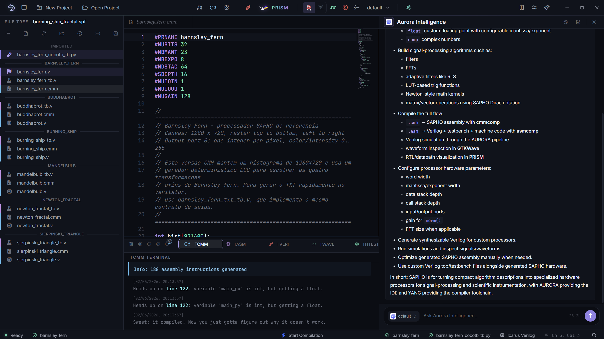
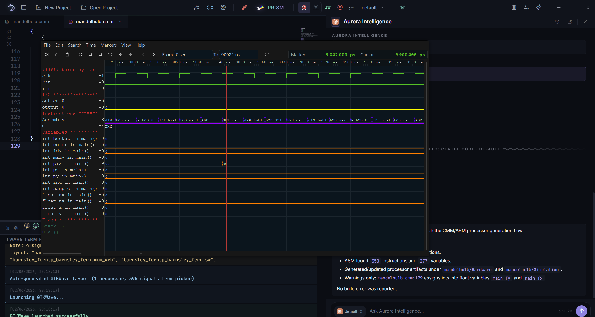
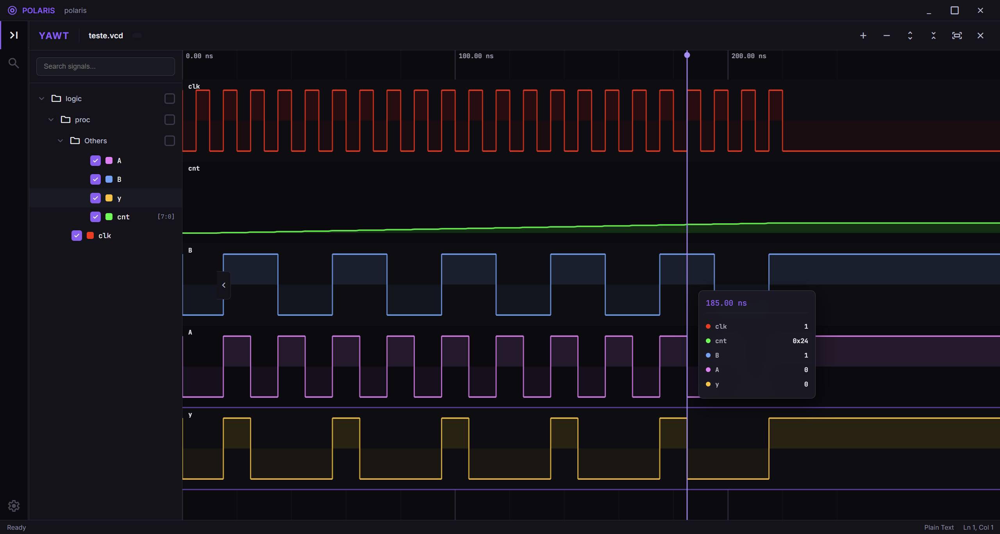
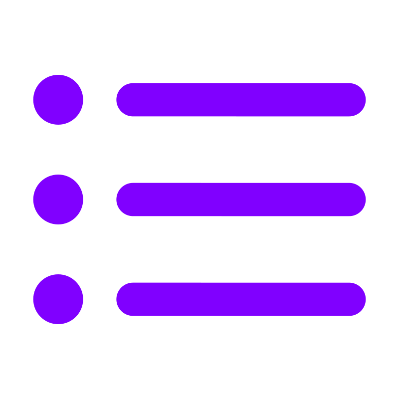
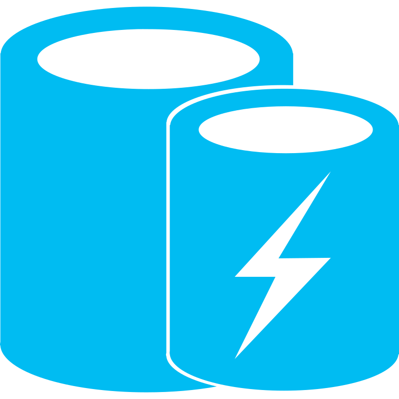
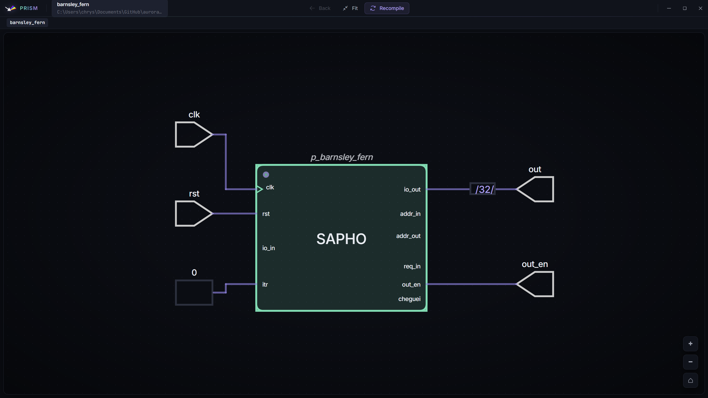
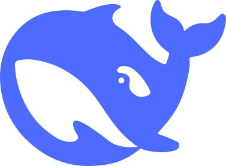
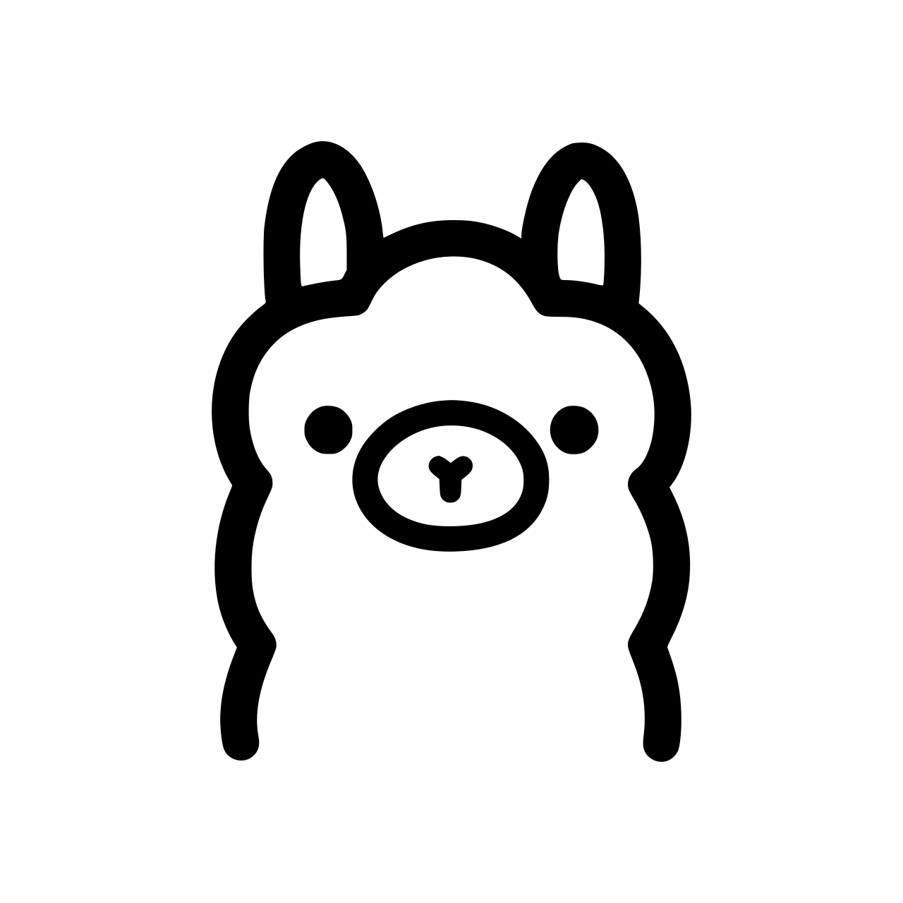

AURORA
The integrated development environment for SAPHO
Describe a processor in a few lines of C±, then compile, simulate and inspect it without leaving the window. AURORA bundles the whole toolchain, plus Aurora Intelligence, an assistant that drives the IDE through its own tools.

AURORAA processor you write down
In SAPHO you don't wire up a processor by hand. You describe it. The first lines of a C± file are not comments or setup; they are the hardware. #NUBITS sets the width of the datapath. #NBMANT and #NBEXPO define the floating-point format the silicon will use. #NDSTAC and #SDEPTH size the stacks; #NUIOIN and #NUIOOU set the I/O ports. Change a number, and you get a different processor.
Below the header you write ordinary-looking code: int, float, if, while, switch, plus the things a signal-processing person reaches for, like a native comp complex type and built-ins such as sin, cos, sqrt, atan and an FFT. YANC turns it into assembly over a compact instruction set, and that assembly into a synthesizable processor.
#PRNAME sqrt_newton #NUBITS 32 // datapath width (the silicon itself) #NBMANT 23 // float: mantissa bits #NBEXPO 8 // float: exponent bits #NDSTAC 5 // data-stack depth #SDEPTH 5 // call-stack depth #NUIOIN 1 // input ports #NUIOOU 1 // output ports
The header is the processor's hardware spec. The body, plain C±, is the program it runs.
SAPHO is NIPSCERN's platform for building custom processors. AURORA is how you use it: the desktop application where a processor goes from a page of code to a simulated, inspectable circuit, all in one place, with nothing to install and no cloud in the loop.
The platform comes in two halves. AURORA is the IDE you see and click: the editor, the file tree, the terminals, the simulators, the RTL viewer. YANC is the compiler suite underneath it (cmmcomp, asmcomp, appcomp). You work in AURORA; YANC does the translating. Together they are SAPHO.
From source to a working circuit, without leaving the app
The editor is Monaco, the engine behind VS Code, with C± highlighting and the compiler's errors underlined inline. You can split it into panes that share the same file, so an edit in one shows up in the others. One toolbar runs the whole chain, and each tool streams into its own terminal: you press a button and watch C± become assembly, assembly become Verilog, Verilog get simulated, and the result drawn as a circuit.

Two simulators, one toggle
Simulation runs on Icarus Verilog or Verilator, switched from a toolbar toggle, and Python cocotb testbenches are supported too. Whatever you pick, the waveform opens in GTKWave showing exactly the signals you selected.
Nothing to install
On first launch AURORA downloads the whole toolchain and the YANC compilers, then wires them into the app. No manual setup, no fiddling with PATH. The simulators, synthesis, waveform viewer and build cache are all bundled.


In development: POLARIS, our Wave Tracer
We are building our own waveform viewer to replace GTKWave. Its name is POLARIS: the POLARIS interface became our Wave Tracer. It reads the same simulation output and is meant to live inside AURORA, so reading signals will not mean opening a separate program.
Bundled toolchain

netlistsvgRTL render
Monacoeditor
ccachebuild cache
See the circuit you described
After synthesis, PRISM takes the netlist that Yosys and netlistsvg produce and renders it as an interactive schematic: the ALU, the stacks, the instruction decoder, the I/O. Click a module to inspect its ports and follow the datapath. It closes the loop between the few lines you wrote and the actual hardware they became.
The same file tree can switch from the folder view to the post-synthesis module hierarchy, so you can navigate the design the way the synthesizer sees it.
An assistant that uses the IDE, not a chat box beside it
Aurora Intelligence is built into AURORA and works through the IDE's own actions. When you ask it to do something, it doesn't shell out to guesswork. It calls the same operations the buttons call: read the project tree, open a file and jump to a line, analyse a processor's assembly, look up an opcode, scaffold a new processor, run the compiler, choose which signals reach the waveform. Around sixty-eight such tools in all.
The line that matters runs between reading and writing. Anything that only reads happens immediately. Anything that writes (editing a file, creating a processor, starting a build) stops and shows you the exact change first, and waits. Every action is recorded.
A real example
Ask it to tighten a processor's hot loop. It reads the generated assembly with the same analyzer the IDE uses, finds where pairs of instructions can collapse into their combined opcode, and writes the candidate into a _aurora_opt sandbox, so your original is never touched. Then it recompiles and reports the instruction count before and after. Each write pauses for your approval.
It actually knows SAPHO
The C± keywords, the hardware directives and the compiler's bilingual error catalogue are loaded straight from the YANC source, so when a build fails, it reads the message the way the compiler meant it.
Aurora Intelligence is the in-house AI of the NIPSCERN lab, in active development. You can follow its progress on GitHub.
Your own model
OpenAI, Anthropic Claude, Google Gemini, DeepSeek or Groq with an API key, or Ollama, running a model entirely on your machine, offline.
Agentic mode
Drive the Claude Code or Codex CLIs on a subscription, bridged to AURORA's tools through a local MCP server, so the agent compiles through the real pipeline.
In context
Answers stream in; file references are clickable and jump to the line; a magic-wand makes targeted edits right where your cursor is.
Asks before it writes
Read tools run on their own; every write shows a confirmation card before it touches a file or runs a build, and lands in an audit log.
Models & providers

DeepSeek
OllamaLocalFrom a classroom to the FPGA bench
AURORA is the reference environment for the DLP course (Programmable Logic Devices) at UFJF, where every student designs, compiles and simulates a custom processor in it. Inside NIPSCERN it's the fast loop for processor experiments: change the architecture, recompile, simulate, read the RTL, and let Aurora Intelligence chase the assembly-level wins. When a design holds up, it goes from PRISM to the FPGA boards in the lab.
Get AURORA
Everyone uses SAPHO the same way: through the one-click Windows installer. It bundles AURORA, the full toolchain and the YANC compilers, and updates itself silently. There is nothing else to set up.
Curious how it all works? Clone the repo, run npm install and npm start, and poke around AURORA itself. If you want some fun, you should give it a try!